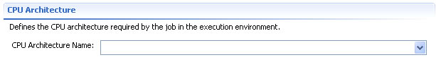

The Resources page provides an interface for specifying the resource requirements of the job. It consists of five sections: the Candidate Hosts, the Operating System, the File System , the CPU Architecture and the Additional Resources Elements .
The section allows to manipulate the CandidateHosts element of a JSDL document. This element specifies a lists of hosts that can be selected for running the job.

Click Add... to open the New Candidate Hosts dialog for adding a new Candidate Host.
The list provides all the hosts that are available for job submission. This hosts are obtained from the Information Service, based on the Virtual Organization (VO) specified in the Grid Project. Hosts that are already included in the Candidate Hosts list on the Resources page, are not included in the New Candidate Hosts dialog.
Select one or more available Candidate Hosts from the list by checking the respective checkbox and press Add.. to include in the Candidate Hosts list.
This section allows to manipulate the OperatingSystemType element of a JSDL document. This elements defines the name of the Operating System.
This section allows to manipulate the FileSystem element of a JSDL document. This elements defines the file system that is required by the job. Also it defines necessary disk space and file system type which are required by the job.
Click Add... to open the New File System dialog for adding a new File System.
A File System Name is mandatory and it is user defined. It MUST be unique within a JSDL document. The File System Name is of type "xsd:NCName". Examples are: "HOME", "ROOT", "TMP".
A Description is optional and provides, human readable, description about the file system. The File System Description is of type "String".
A Mount Point is optional and specifies a local location that MUST be available in the allocate resource for the job. The Mount Point of type "String".
A Mount Source is optional and specifies a remote location that MUST be be made available locally for the job. The Mount Source of type "String".
A Disk Space is optional and specifies in bytes the required amount of disk space on the containing file system element for the job. The Disk Space is of type "Double". A LOWER or UPPER Boundary must be specified in the specified disk space.
A File System Type is optional and describes the type of file system. The File System type can be: "swap", "temporary", "spool" or "normal" .
This section allows to manipulate the CPUArchitecture element of a JSDL document. This elements defines the CPU Architecture that is required by the job. Also it defines necessary disk space and file system type which are required by the job.
This section allows to define additional resource requirements of the job. A Range can be specified by selecting either LowerBoundedRange, UpperBoundedRange or exact from the combo-box and the entering the respective value.